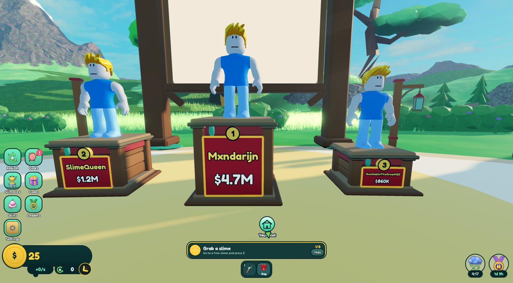
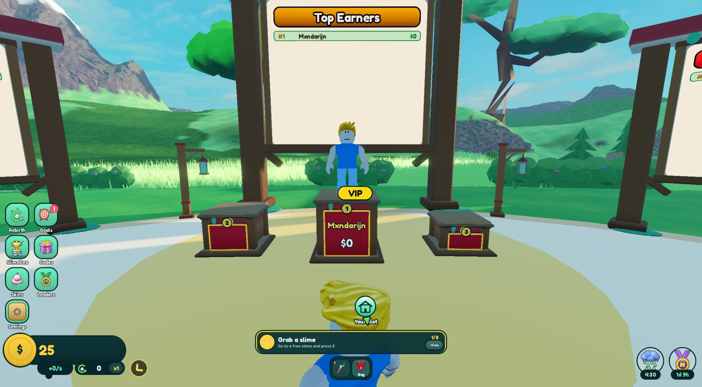
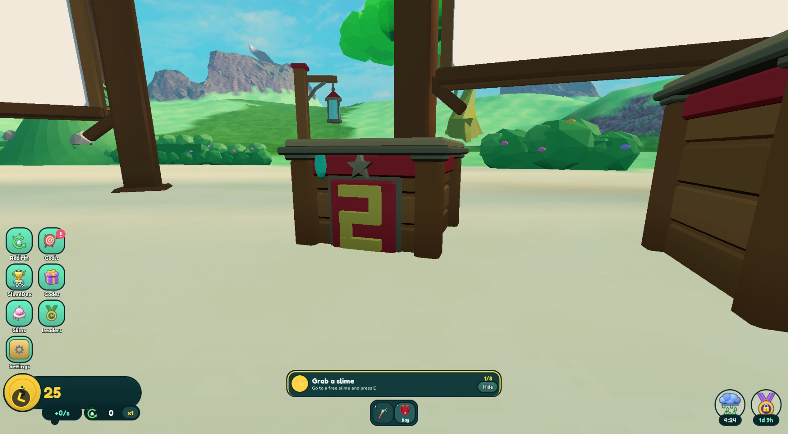
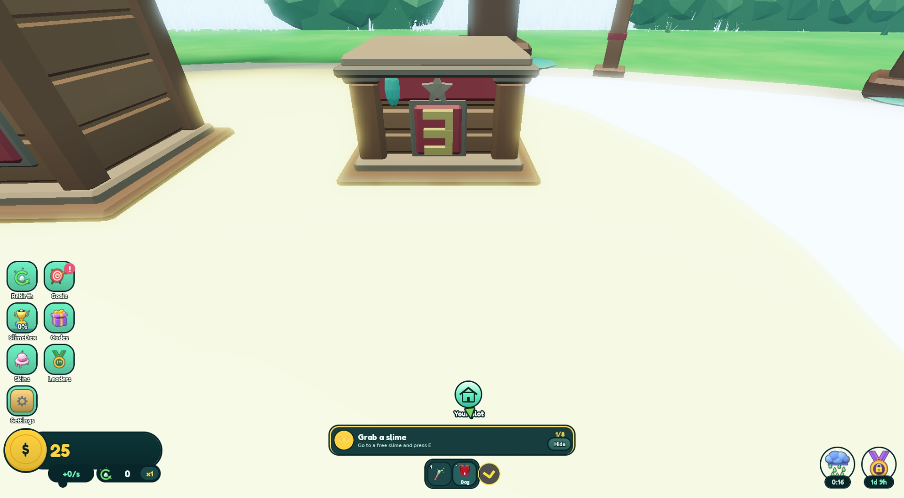
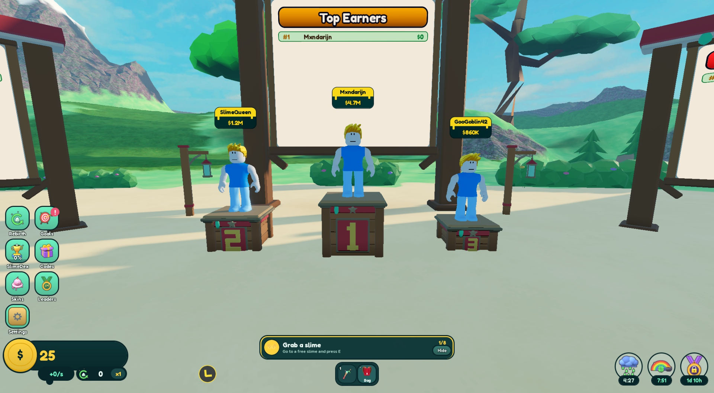
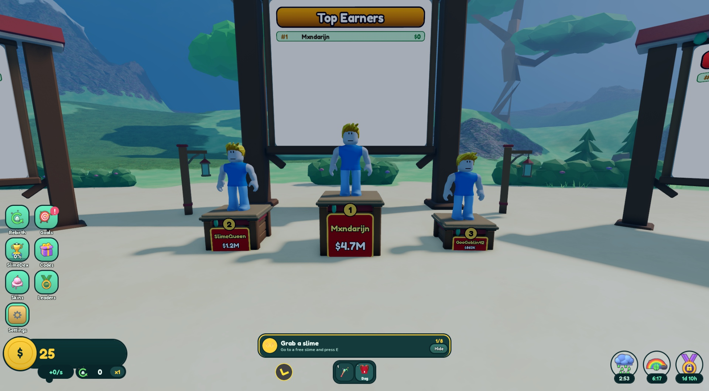
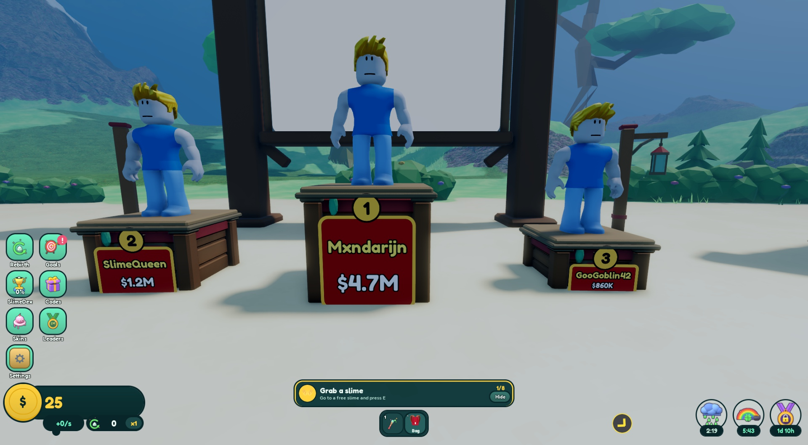
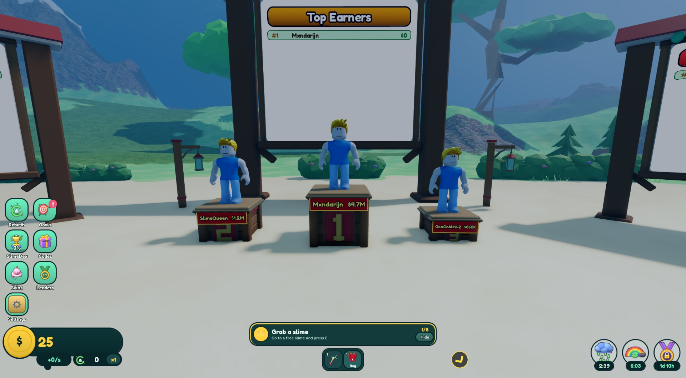
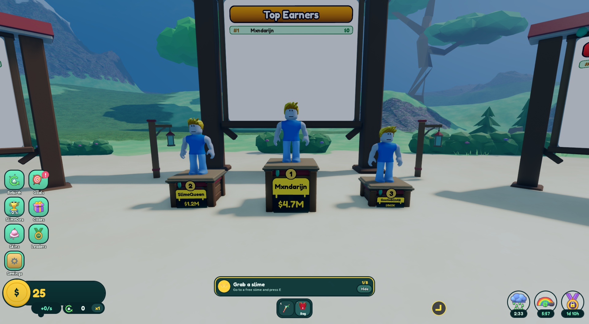

<title>Podium Nameplates</title>
<meta name="claude:viewport-fit-sides" content="cover">
<link rel="preconnect" href="https://fonts.googleapis.com">
<link rel="stylesheet" href="https://fonts.googleapis.com/css2?family=Fredoka:wght@500;600;700&family=Nunito:wght@400;600;700&display=swap">
<style>
/* Layout: one reading column; each option is a screenshot card with a short pros/cons strip under it. */
:root {
  --bg: #f3f6f2;
  --surface: #ffffff;
  --ink: #08262a;
  --muted: #4c6466;
  --line: #d5e0dc;
  --gold: #ffd23f;
  --gold-ink: #6b5200;
  --red: #96262c;
  --good: #1f7a4a;
  --warn: #9a5b00;
  --display: "Fredoka", "Trebuchet MS", system-ui, sans-serif;
  --body: "Nunito", "Segoe UI", system-ui, sans-serif;
  color-scheme: light;
}
@media (prefers-color-scheme: dark) {
  :root:not([data-theme="light"]) {
    --bg: #0b1c1e; --surface: #12292c; --ink: #e8f2ef; --muted: #9bb4b1; --line: #24423f;
    --gold: #ffd23f; --gold-ink: #ffd23f; --red: #e0646a; --good: #5fd39a; --warn: #f0b354; color-scheme: dark;
  }
}
:root[data-theme="dark"] {
  --bg: #0b1c1e; --surface: #12292c; --ink: #e8f2ef; --muted: #9bb4b1; --line: #24423f;
  --gold: #ffd23f; --gold-ink: #ffd23f; --red: #e0646a; --good: #5fd39a; --warn: #f0b354; color-scheme: dark;
}
* { box-sizing: border-box; }
body {
  background: var(--bg); color: var(--ink); font-family: var(--body); font-size: 16px; line-height: 1.55;
  padding-left: max(16px, env(safe-area-inset-left, 0px)); padding-right: max(16px, env(safe-area-inset-right, 0px));
  padding-block: 32px 64px;
}
main { max-width: 920px; margin: 0 auto; display: flex; flex-direction: column; gap: 40px; }
h1, h2, h3 { font-family: var(--display); line-height: 1.15; text-wrap: balance; margin: 0; }
h1 { font-size: 2.3rem; font-weight: 700; }
h2 { font-size: 1.55rem; font-weight: 600; }
h3 { font-size: 1.2rem; font-weight: 600; }
p { margin: 0; max-width: 68ch; }
.eyebrow { font-size: .8rem; letter-spacing: .08em; text-transform: uppercase; color: var(--muted); font-weight: 700; }
header { display: flex; flex-direction: column; gap: 12px; }
.lede { font-size: 1.1rem; color: var(--muted); }
section { display: flex; flex-direction: column; gap: 16px; }
figure { margin: 0; display: flex; flex-direction: column; gap: 8px; }
figure img { width: 100%; height: auto; border-radius: 10px; border: 1px solid var(--line); display: block; }
figcaption { font-size: .9rem; color: var(--muted); }
.option { background: var(--surface); border: 1px solid var(--line); border-radius: 14px; padding: 20px; display: flex; flex-direction: column; gap: 14px; }
.option.pick { border: 2px solid var(--gold); }
.opt-head { display: flex; align-items: baseline; gap: 12px; flex-wrap: wrap; }
.letter { font-family: var(--display); font-weight: 700; font-size: 1.1rem; background: var(--ink); color: var(--bg); border-radius: 8px; padding: 2px 10px; }
.badge { font-size: .8rem; font-weight: 700; background: var(--gold); color: #3a2c00; border-radius: 999px; padding: 2px 10px; }
.pc { display: grid; grid-template-columns: 1fr 1fr; gap: 16px; }
.pc > div { min-width: 0; }
.pc h4 { margin: 0 0 4px; font-size: .85rem; letter-spacing: .06em; text-transform: uppercase; }
.pc .pro h4 { color: var(--good); }
.pc .con h4 { color: var(--warn); }
ul { margin: 0; padding-left: 20px; display: flex; flex-direction: column; gap: 4px; }
.tablewrap { overflow-x: auto; border: 1px solid var(--line); border-radius: 10px; background: var(--surface); }
table { border-collapse: collapse; width: 100%; min-width: 560px; font-variant-numeric: tabular-nums; }
th, td { text-align: left; padding: 10px 14px; border-bottom: 1px solid var(--line); }
th { font-size: .8rem; letter-spacing: .05em; text-transform: uppercase; color: var(--muted); }
tr:last-child td { border-bottom: 0; }
.note { font-size: .9rem; color: var(--muted); }
.decided { border: 2px solid var(--gold); border-radius: 14px; padding: 18px 20px; display: flex; flex-direction: column; gap: 8px; }
code { font-size: .9em; background: color-mix(in srgb, var(--line) 55%, transparent); padding: 1px 5px; border-radius: 4px; }
.pair { display: grid; grid-template-columns: 1fr 1fr; gap: 12px; }
.pair > figure { min-width: 0; }
@media (max-width: 640px) { .pc, .pair { grid-template-columns: 1fr; } h1 { font-size: 1.8rem; } }
</style>

<main>
  <header>
    <span class="eyebrow">Steal a Slime · Top Earners plaza · proposal</span>
    <h1>Podium Nameplates</h1>
    <p class="lede">The name and total earned of the top three now float over each avatar's head. This moves them into the podium stand itself, as a plate on its front.</p>
  </header>

  <section class="decided" aria-labelledby="decided">
    <h2 id="decided">Decided</h2>
    <p><strong>Merijn picked A, the trophy plate (2026-10-31): "build option a".</strong></p>
    <ul>
      <li>Built in code, without a new mesh: the plate and medallion are parts mounted on each podium's front, and the plate covers the modelled numeral. No re-upload needed.</li>
      <li>Kept as they are for now: podium sizes (podium 3 is not taller), the money stays on the plate, back of the podiums unchanged.</li>
    </ul>
    <figure>
      
      <figcaption>As built, in a Studio playtest. Sample names; podium 3 shows a 20-character name, the longest Roblox allows.</figcaption>
    </figure>
    <figure>
      
      <figcaption>With real data from the playtest: one player on the server, so podiums 2 and 3 show a blank plate with only their rank.</figcaption>
    </figure>
    <h3>"Are podiums 2 and 3 in the ground?"</h3>
    <p>No. Their bottoms sit exactly on the floor (y = 0) and no terrain is above them. The cut-off look in the first screenshots came from the terrain's level of detail: the test character stood at spawn, about 360 studs away, so the plaza's terrain was drawn coarse and covered the bottom 0.7 studs. With a player at the stage the plinth, step and gold stage floor all show.</p>
    <div class="pair">
      <figure><figcaption>Character at spawn: coarse terrain hides the plinth.</figcaption></figure>
      <figure><figcaption>Character at the stage: plinth and step show.</figcaption></figure>
    </div>
  </section>

  <section aria-labelledby="now">
    <h2 id="now">Today</h2>
    <figure>
      
      <figcaption>In game now: a floating Goo name board over each head (<code>server/PodiumRigs</code>, pixel tag 120×61, hidden past 50 studs). Names and money are sample data.</figcaption>
    </figure>
    <ul>
      <li>The boards float in front of the big Top Earners board and overlap it from most angles.</li>
      <li>It is a pixel tag, so it stays the same size on screen however far away you stand. On a phone it takes a bigger share of the screen.</li>
      <li>The podium's own front shows only a big rank numeral; the name has no connection to the stand.</li>
    </ul>
  </section>

  <section aria-labelledby="opts">
    <h2 id="opts">Options</h2>
    <p class="note">Each screenshot is a quick mock in a Studio playtest: flat panels laid over the current podium mesh. Nothing was changed in the model or code yet. The final version would build the plate shape into the mesh.</p>

    <article class="option pick">
      <div class="opt-head"><span class="letter">A</span><h3>Trophy plate</h3><span class="badge">Recommended</span></div>
      <figure>
        
        
        <figcaption>The red front plaque grows to fill the space between the corner posts. Name in butter yellow, total earned in white under it. The rank moves to a round brass medallion where the star is now.</figcaption>
      </figure>
      <div class="pc">
        <div class="pro"><h4>Good</h4><ul><li>Fits the ranch look of the podium (barn red and brass, same as the plaque today).</li><li>Biggest text of the three options.</li><li>Nothing floats; the Top Earners board behind is free.</li></ul></div>
        <div class="con"><h4>Watch out</h4><ul><li>Podium 3 is short, so its plate is small (see the table).</li><li>Needs a new podium mesh: numeral removed, medallion added. That is a model round plus a re-upload.</li></ul></div>
      </div>
    </article>

    <article class="option">
      <div class="opt-head"><span class="letter">B</span><h3>Name band</h3></div>
      <figure>
        
        <figcaption>The red band under the top gets taller and carries "name · money" on one line. The big rank numeral stays as it is.</figcaption>
      </figure>
      <div class="pc">
        <div class="pro"><h4>Good</h4><ul><li>Smallest change to the model; the big numeral stays.</li><li>Reads as part of the podium's trim.</li></ul></div>
        <div class="con"><h4>Watch out</h4><ul><li>One line means the smallest text: hard to read beyond a few steps on a phone.</li><li>The taller band eats into the numeral plaque on podiums 2 and 3.</li></ul></div>
      </div>
    </article>

    <article class="option">
      <div class="opt-head"><span class="letter">C</span><h3>Goo board plate</h3></div>
      <figure>
        
        <figcaption>Same size and place as A, but drawn as the Goo board players know from today's floating tag and the plot signs: dark glass, gold band with the name, money in gold.</figcaption>
      </figure>
      <div class="pc">
        <div class="pro"><h4>Good</h4><ul><li>Same look as today's tag, just moved into the stand.</li><li>Uses the existing <code>GooBoard</code> builder, so little new UI code.</li></ul></div>
        <div class="con"><h4>Watch out</h4><ul><li>Dark glass on a wooden ranch podium looks stuck on rather than built in.</li><li>Same small plate on podium 3 as A.</li></ul></div>
      </div>
    </article>
  </section>

  <section aria-labelledby="read">
    <h2 id="read">How far away can you read the name?</h2>
    <p>Text painted on the podium shrinks with distance like the podium does. Using the world-labels guide (a line <em>h</em> studs tall reads up to 20×<em>h</em> on a phone and 55×<em>h</em> on a 1080p screen), for the sample names in the screenshots:</p>
    <div class="tablewrap">
      <table>
        <thead><tr><th>Podium</th><th>A / C name height</th><th>Phone</th><th>1080p</th><th>B name height</th><th>Phone</th><th>1080p</th></tr></thead>
        <tbody>
          <tr><td>#1 (Mxndarijn)</td><td>0.57 studs</td><td>11 studs</td><td>31 studs</td><td>0.42 studs</td><td>8 studs</td><td>23 studs</td></tr>
          <tr><td>#2 (SlimeQueen)</td><td>0.45</td><td>9</td><td>25</td><td>0.36</td><td>7</td><td>20</td></tr>
          <tr><td>#3 (GooGoblin42)</td><td>0.36</td><td>7</td><td>20</td><td>0.32</td><td>6</td><td>18</td></tr>
        </tbody>
      </table>
    </div>
    <p class="note">The width of the plate limits the text more than its height: long names get smaller. Roblox display names can be up to 20 characters. The stage is 16 studs across, so on a phone you read the plates when you walk up onto the stage. The big Top Earners board right behind shows the same names, readable from across the plaza.</p>
  </section>

  <section aria-labelledby="plan">
    <h2 id="plan">What building A would take</h2>
    <ul>
      <li><strong>Model</strong> (<code>shared/modeling-kit/models/_phoenix_podium.py</code>): front plaque becomes a flat plate between the corner posts, modeled numeral removed, brass medallion in place of the star. Back plaque keeps its numeral. Podium 3 grows a little taller (top 3.9 → about 4.6) so its plate fits two lines. Re-upload of three meshes needs your OK.</li>
      <li><strong>Code</strong> (<code>server/PodiumRigs</code>): replace the floating <code>BillboardGui</code> with a <code>SurfaceGui</code> on a thin, non-colliding plate part per podium, plus the rank on the medallion. Same rules as today: a hidden player shows "Hidden", an empty podium shows only its rank.</li>
      <li><strong>Labels guide</strong>: update the "Podium name board" row in <code>guides/roblox-world-labels.md</code> with the new kind and an explicit <code>MaxDistance</code> of about 60.</li>
      <li><strong>Checks</strong>: the layout and podium specs, a Studio screenshot of all three podiums with a long 20-character name, and a phone-size screenshot.</li>
    </ul>
  </section>

  <section aria-labelledby="q">
    <h2 id="q">Questions for you</h2>
    <ul>
      <li>Which option: A, B or C?</li>
      <li>Keep the money on the plate, or show only the name (bigger text)?</li>
      <li>Is it OK to make podium 3 a bit taller so its plate is readable?</li>
      <li>Only the front, or a plate on the back too? Today the back shows the rank numeral and faces the board.</li>
    </ul>
  </section>

  <section aria-labelledby="checks">
    <h2 id="checks">Checked and not checked</h2>
    <ul>
      <li>Checked: current podium label code and model; all three options mocked on the real podiums in a muted, hidden Studio playtest, screenshots from the stage front.</li>
      <li>Not checked: phone screenshot; long 20-character names; read distances are worked out from the guide's formula, not measured; how the final mesh plate looks (the mocks are flat panels).</li>
    </ul>
  </section>
</main>
